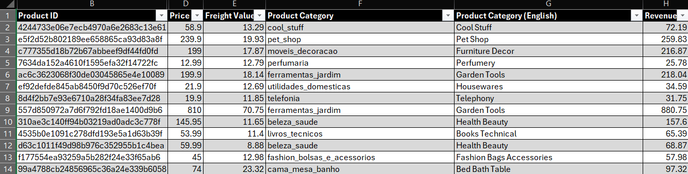
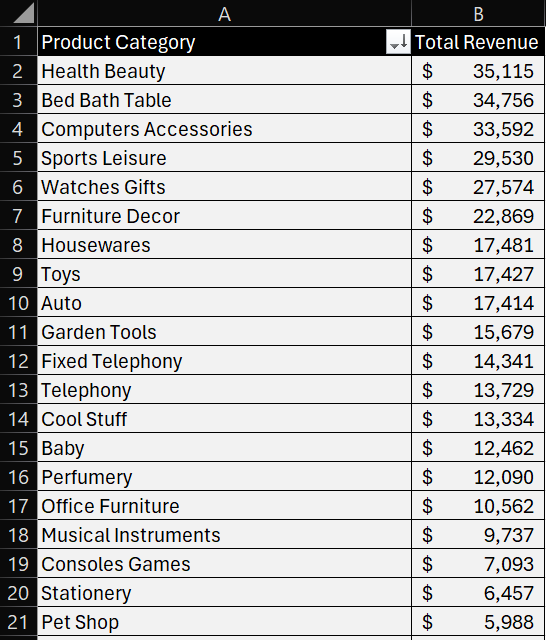

Excel · Lookups
After the layoffs project, I wanted one built around a different core Excel skill: pulling data from one table into another. That is what XLOOKUP is for, and it shows up in a lot of analyst job descriptions. I used the Brazilian ecommerce dataset from Olist on Kaggle, which is real order data from 2016 to 2018 where the tables already come separate, so I did not have to invent a second table just to make a lookup make sense.
I pulled two files, order items and products. The order items file had over 112,000 rows, so I kept the first 3,000 to keep the workbook fast. Products had about 33,000 rows and I kept all of them. Before touching anything I checked both for duplicates and found none. Then I cleaned up the headers, converted both to Tables, and deleted the columns the analysis was never going to use, like product weight and dimensions. A few rows in the order items table now look identical, because an order can include several units of the same product. An order item ID column told them apart when I ran the duplicate check, and I deleted it afterward since the analysis did not use it.
The order items table only had a product ID, not what the product actually was. The products table had the category. So I used XLOOKUP to pull each product's category into the order items table, matching on product ID. I also added a revenue column, defined as price plus freight value, so there was something to actually add up.
The categories came through in Portuguese, since Olist is a Brazilian company. Olist publishes a third file that maps each Portuguese category to English, so I added it as a third sheet and chained a second lookup onto the first: order items looks up products, and products looks up the translation table. I hid the translation sheet afterward so the workbook stays clean, but the formulas still run off it. The English names still had underscores and lowercase letters, so I turned them into readable labels with PROPER and SUBSTITUTE. Bed_bath_table became Bed Bath Table.

Order Items with the lookup columns: Portuguese category, English category, and revenue
Two things showed up along the way. First, spelling errors in the translation file itself: one category was spelled "costruction" and another "fashio," each missing an n. I fixed both at the source so the corrections flowed through everywhere.
Second, one set of products came back with a category of 0 instead of a name. There was no usable category for them in the source data, so the translation lookup had nothing to match and returned an error, which showed up as #N/A in the pivot table. I wrapped the lookup in IFERROR so those rows now read Uncategorized. I did not want to delete them or hide the error, since the revenue is real (about $4,500 in this sample) and it is more honest to show it as its own line.
The last step was a pivot table of total revenue by category, sorted from highest to lowest. The sample came to about $426,000 in revenue, and health and beauty, bed bath and table, and computer accessories each brought in more than $33,000.

Total revenue by product category
A lookup is only as good as the tables behind it. The formula was the easy part. The real work was checking what came back, translating it, and deciding what to do with the rows that did not fit.